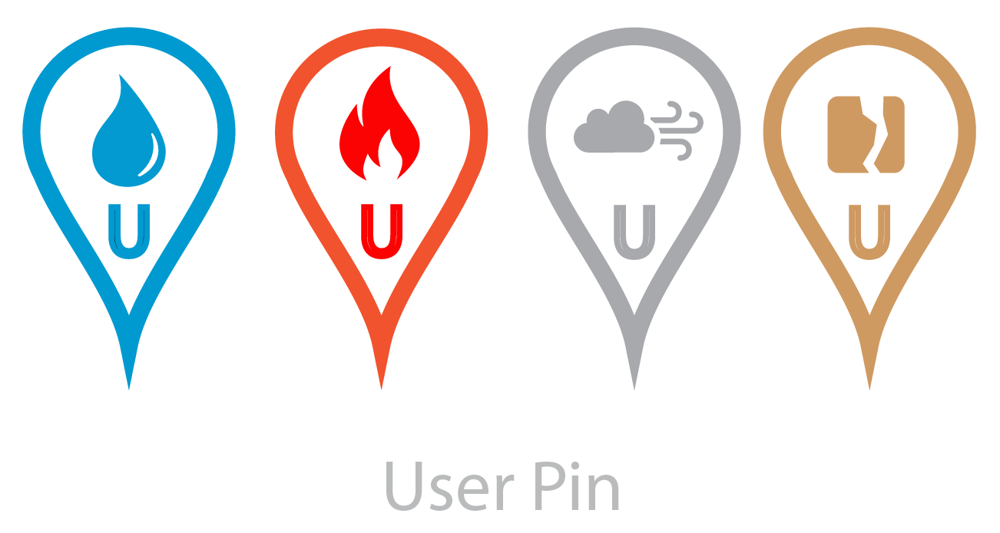

Plusieurs heures de recherche pour décider d'utiliser Firebase pour le Log/Sign In system (début d'intégration dans l'application Android). Encore de la recherche pour déterminer que SharedPreference sera utilisé pour conserver des informations sur l'usager à l'interne (intégration elle aussi commencée: on peut désormais sauvegarder les zones qu'on désire surveiller!). Un peu de refactor sur le code (entre autres: 20% moins de lignes dans notre MainActivity en enlevant la répétition de code). Fix pour qu'on puisse de nouveau utiliser l'option "Instant Run" offerte par AndroidStudio (ce qui améliore considérablement la vitesse de chargement pour faire des tests).
Semaine 25 juin
Fin des examens intras. Rencontre avec l'équipe. J'ai retouché le site web (WebApp) pour corriger certaines erreurs d'interprétation des types de PIN et aussi pour intégrer les USER PIN. Il reste à décider de la grosseur de ces pins (sera fait plus tard).
Semaine du 4 juin
Recherches par rapport aux connections sécurisées: confirmation que la connection établie par l'application est sécurisée
en utilisant les protocoles du HTTPS (TLS/SSL). L'envoie d'informations sensibles (username+password bundle) via l'URL ne devrait
donc pas être une brèche de sécurité: seul le nom de domaine ne sera pas encrypté. Ce sera donc fort probablement
l'approche utilisée pour l'enregistrement et l'identification des usagers.
Lecture par rapport aux Notifications, Data Storage, et Account Management System.
Semaine du 21 mai
Création du site web de l'équipe (affichage dynamique: accessible par téléphone cellulaire), organisation du GitHub en conséquence (nouveau dossier spécifique au site web pour ce cours), création du patron pour les pages individuelles des membres de l'équipe.
Design pour différencier les Pins des alertes déclarées par des utilisateurs de celles provenant de BDD officielles (gouvernement).

Semaine du 14 mai
Rencontre d'équipe pour revisiter les progrès réalisés et élaborer un Plan de Travail qui définit un peu mieux les objectifs, la répartition des tâches et le découpage des concepts.
Semaine du 30 avril
Recherche sur la manière de programmer des applications Android.
Brainstorm sur le concept du logiciel et la répartition des tâches.
Participation au Hackhaton "HackQc 2018" sur les Données Ouvertes. Premier jet de prototype de Acclimate (qui a remporté la 3e place).
Contributions personnelles (durant le Hackathon):
Quelques décisions sur le design (police utilisée dans le logo, ajout de texte indicateur sous le logo de la carte sur l'Activity d'accueil, etc.).
Contribution pour le Parsing de la BDD « Historique ».
Apprentissage sur le fonctionnement des applications Android et leur développement.
Création du patron des Activities de l'application.
Implémentation du design proposé par Charles-Philippe Lepage dans le Frontend de l'application (travail avec les fichiers XML et le Manifest).
Implémentations mineures reliées au Backend (filtres d'affichage sur la carte, intégration d'un champ de recherche, affichage dans la page d'accueil du nombre de chaque alertes en fonction de leur type).